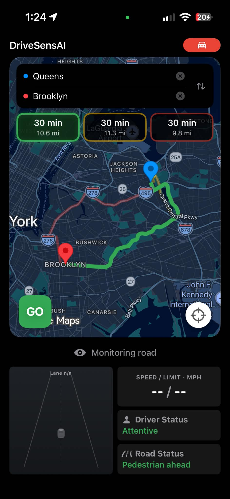

Route safety
insights
See estimated crime risk alongside travel choices, with category and hourly views that add context to the journey ahead.
Your road companion · ShellHacks 2026
Know more before you go. Stay aware along the way. WheelBuddy pairs route insights with real-time driving alerts, right on your iPhone.

On a trip to the Smoky Mountains, we rented a car with modern driver assistance. We felt more aware and reassured behind the wheel. Back home in our older cars, we wondered whether the phone we already owned could help fill some of that gap.
We also wanted more context before setting out, especially after dark. The fastest route isn’t always the one we feel most comfortable taking.
So we built a companion for both decisions: choosing a route and driving it.
THE RESEARCH THAT INSPIRED US
Studies by IIHS associated forward collision warning with 27% fewer rear-end striking crash involvements and lane departure warning with 11% fewer single-vehicle, sideswipe and head-on crashes after adjustment. These are findings for the studied vehicle systems, not measured outcomes for WheelBuddy.
From choosing a route to navigating the road ahead, WheelBuddy helps you stay informed and aware throughout the drive.
Compare available routes using estimated crime risk for the areas and time of travel. Explore route safety scores, crime categories, and how the estimates vary by hour.
Using both iPhone cameras, Drive Mode looks for road objects and signs that your attention may be drifting. It brings alerts into one clear driving view.
Practical signals at the moments they matter, designed to be easy to understand at a glance.
See estimated crime risk alongside travel choices, with category and hourly views that add context to the journey ahead.
On-device object detection watches for nearby vehicles and pedestrians.
Face orientation helps identify when the driver looks away for too long.
A temporal model detects prolonged eye closure and triggers audio and visual warnings.
On-device lane detection explores another way to notice drift. This feature is still being refined.
GPS shows your current speed in Drive Mode. During active navigation, Google Maps can supply an estimated posted limit, color cues when you’re over it, and a “Slow down” banner for major overspeed.
Six clips from our live tests. Select a feature to watch how the prototype responds.
Prototype demonstrations. Alerts and predictions are assistive information and do not replace attentive driving.
WheelBuddy connects time-aware route predictions with live road and driver monitoring. FastAPI serves the crime and drowsiness models, while Core ML and Apple Vision process camera signals on the iPhone.
We trained our crime prediction model using outdoor crime records from the Crime Open Database (CODE). The selected data covers records from 2016 to 2025 across 11 cities:
Google Maps supplies candidate routes and travel times. We identify the areas each route crosses and when the driver is expected to reach them, then request predictions from our crime model through FastAPI.
The app combines those predictions into route safety scores, crime category breakdowns, and hourly views.
The iPhone runs its front and rear cameras simultaneously. Core ML identifies vehicles and pedestrians in road footage, while Apple Vision estimates the driver's head orientation for looking-away alerts.
A ResNet-18-based lane model trained on the CurvedLanes dataset also runs through Core ML. Improving lane detection across roads and lighting conditions remains an active focus.
We trained a custom temporal model using the Driver Monitoring Dataset (DMD). WheelBuddy extracts eye and facial measurements over time and sends them to the model through an inference API.
Sustained eye closure triggers visual and audio warnings, bringing the model's output into the live driving experience.